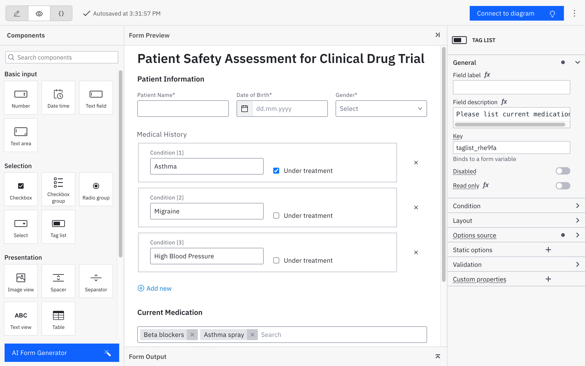

Introduction to forms
Forms play a key role in giving work instructions, collecting information and making decisions on human tasks. Forms are lightweight user interfaces, tailored for focused data input in specific steps of a process, rendering the orchestration of human tasks more efficient than simply routing users to the applications that are orchestrated.
Forms are commonly used in user tasks, but also as start forms to start a new process instance, or even as public forms, e.g. to capture user input at scale or to allow your customers to trigger a self-service process.
Camunda Forms
In Camunda 8, you can design forms using a drag'n'drop editor. The form editor is available in both Desktop and Web Modeler. Learn more about Camunda Forms and available components in the Camunda Forms reference documentation, and learn how to design a human workflow with forms in the getting started guide.

form-js
Camunda Forms present a flexible, open solution to form creation. Camunda Forms are based on the form-js library
, maintained by Camunda. As a result, the form editor and renderer are non-proprietary, open-source technology, and can be used everywhere, also outside the context of Camunda 8. This unlocks a world of use cases, and eliminates any doubt around vendor lock-in or technical barriers.Form-js is a vanilla JavaScript library with Preact in the background, and can be used in any framework, from Angular to React.
The resulting forms are serialized as a JSON document. The JSON document conforms to an open form schema that allows you to render the form using both the built-in form render, or even with a custom render. The form schema is extensible, allowing you to build your own extensions or custom components.
We welcome your contributions to form-js! Whether it's fixing a bug, adding a feature or a new component, your input is valuable. You can also provide your ideas by opening issues for us or the community.
How to Contribute:
- 🌐 Visit our GitHub Repository.
- 🛠️ Check out the issues or open a new one.
- 💻 Fork the repository and submit a pull request.
Let's make form-js better together! 👩💻👨💻
Continue reading to learn how to setup, embed, and extend form-js to build form-based task applications for any use case.